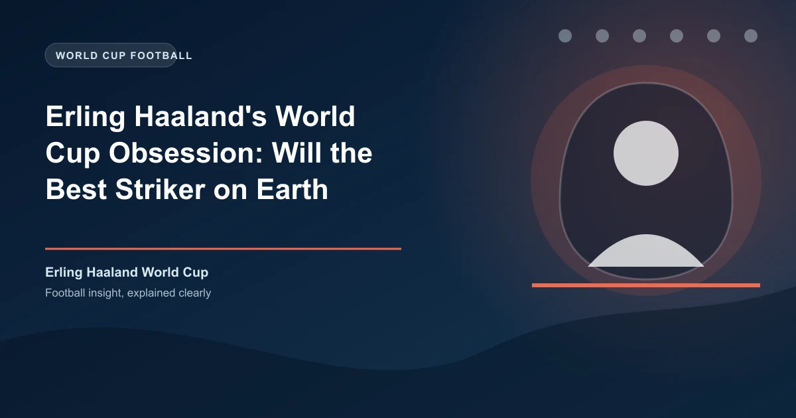

Erling Haaland has scored 62 goals for Manchester City in a single season. He has won the Premier League, the Champions League, the FA Cup, and the Club World Cup. He has been the Premier League Player of the Season, the Champions League Player of the Season, the PFA Player of the Year, and the Ballon d'Or runner-up. By age 25, he has a trophy cabinet that most footballers would envy for an entire career.
But there is one thing Haaland has never done. One thing he wants more than any other. One thing that is starting to itch at his legacy in a way that no trophy haul can fully scratch. Erling Haaland has never played in a World Cup. He has never walked out onto the pitch for the opening match of a group stage. He has never heard his national anthem ring around a stadium of 80,000 people knowing that the entire world is watching. And that emptiness is becoming the defining challenge of his career.
Norway's failure to qualify for the 2022 World Cup was the first major disappointment of Haaland's international career. They were drawn in Group G with the Netherlands and Turkey. They finished third. The decisive match was a 2-0 home defeat to the Netherlands in October 2021, a game Norway dominated but lost due to a lack of cutting edge from players other than Haaland. The striker was injured for the final two qualifiers, watching from the stands as Norway stumbled against Latvia and the Netherlands sealed top spot.
The 2022 qualifiers exposed a cruel truth about Norway: they had two world-class players — Haaland and Martin �degaard — but little else. The supporting cast was not at the level needed to compete with Europe's elite. Norway's defence conceded 10 goals in 10 matches. Their midfield, outside �degaard, lacked creativity. The bench was thin. Haaland could score a hat-trick in a qualifier and Norway could still draw because they could not defend a lead. This was the structural problem that the Norwegian Football Federation (NFF) knew it had to solve.
The 2026 World Cup is not just another chance for Haaland. It may be his last realistic one. Norway's golden generation — �degaard (27), Haaland (25), Sander Berge (28), Alexander S�rloth (30), and Julian Ryerson (28) — is in its prime. These five players are at the peak of their careers, playing for clubs like Manchester City, Arsenal, Real Sociedad, and Atl�tico Madrid. But by 2030, the picture will look different. �degaard will be 31. Haaland will be 30. The supporting cast will be older, slower, and potentially retired from international football. If Norway cannot reach the 48-team 2026 World Cup — the most accessible tournament in history, with 16 UEFA spots — then questions about Haaland's international legacy will follow him forever.
38
International goals for Norway
0
World Cup appearances
62
Goals in 2022-23 season (Europe record)
14
Norway's FIFA ranking (pre-tournament)
Norway's path to the 2026 World Cup has been a rollercoaster. Drawn in UEFA Qualifying Group E with Germany, Azerbaijan, and Kazakhstan, they faced a familiar challenge: a single true elite opponent and a group of teams they were expected to beat. The Germany double-header was always going to determine the group. Norway lost 2-1 in Berlin in March 2025, a game where Haaland scored but missed a penalty. They won 3-2 in Oslo in September 2025, with Haaland scoring twice, including the winner in the 89th minute. Our match analysis tool tracks Norway's head-to-head form against every potential play-off opponent.
As of June 2026, Norway have secured at least a play-off spot. The play-offs, featuring the best second-placed teams and some Nations League winners, are a minefield. A single bad match can end the dream. Norway's likely play-off match will be against Poland or Scotland — beatable opponents, but not easy ones. One game. One chance. That is the margin that will decide Haaland's World Cup fate.
Does a player need to perform at the World Cup to be considered truly great? Haaland's club achievements put him in the conversation with the best strikers of all time: Ronaldo Naz�rio, Thierry Henry, Robert Lewandowski, and Gerd M�ller all played in multiple World Cups. But the question is not whether Haaland is great. It is whether he can be considered among the all-time greats without ever appearing at football's greatest show.
Lewandowski was 32 before he scored his first World Cup goal. George Weah never played in a World Cup and is still considered one of the finest African players ever, but he also won the Ballon d'Or and played for AC Milan. Haaland is on a trajectory that could see him break every scoring record in European football. But if he retires without ever playing in a World Cup, there will always be a hole in his resume — and a debate about what might have been. Try accumulator betting strategies to combine Haaland's goalscorer markets for bigger payouts.
Haaland is not the type to shrink from the chase. He dragged Salzburg to the Champions League knockout stages as a teenager. He carried Dortmund to DFB-Pokal glory. He made Manchester City's treble possible with goals that defied logic. He is a player built for defining moments. The World Cup is the ultimate defining moment. Whether he gets to experience it will determine not just his legacy, but the legacy of Norwegian football itself.
Get free daily match predictions for every qualifier and World Cup match.
Generate optimized accumulator combinations from today's AI-powered predictions. Set your target odds and get instant ticket suggestions.
Free Ticket Builder →